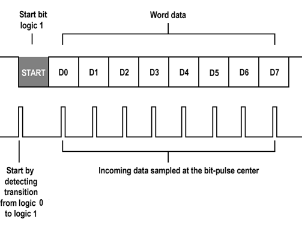

Prácticas
En este apartado se encuentran las prácticas de la materia
Práctica 4
Introducción
En la práctica número cuatro se busca poder identificar y comprobar el funcionamiento al desarrollar un protocolo de comunicación asíncrono
Objetivos
• Utilizando 1 Arduino, diseñar un sistema que permita convertir el valor analógico de un potenciómetro en un arreglo de variables que representen el numero en binario de 8 bits, y los deposite en un arreglo [ ], Finalmente elaborar un código de programación que permita enviar los bits del arreglo en orden y en serie siguiendo las siguientes características:
• Iniciar el envió de los datos siempre con una señal HIGH (En total se enviarán 9 datos, el primer bit en HIGH y posteriormente los 8 bits de información).
• Enviar los datos con una duración del pulso predeterminada, ejemplo 1000 ms
• Enviar siempre la misma cantidad de bits.

• Utilizando un segundo Arduino, diseñar una función que permita adquirir el valor en bits de la señal de comunicación del Arduino anterior, la procese y la convierte en un dato decimal que finalmente enviara al monitor serial.
Marco teórico
Protocolo de comunicación: Se trata del conjunto de pautas que posibilitan que distintos elementos que forman parte de un sistema establezcan comunicaciones entre sí, intercambiando información. l protocolo de comunicación determina cómo deben circular los mensajes dentro de una red. Cuando la circulación de la información se desarrolla en Internet, existen una serie de protocolos específicos que posibilitan el intercambio. Los protocolos de comunicación en Internet más importantes son TCP (cuyas siglas pueden traducirse como Protocolo de Control de Transmisión) e IP (Protocolo de Internet). Su acción conjunta (TCP/IP) posibilita el enlace entre todos los equipos que acceden a la red.
Definición recuparada de: https://definicion.de/protocolo-de-comunicacion/
Comunicación asíncrona. Es la conexión que se establece entre el cliente y el servidor que permite la transferencia de datos no sincrónica,
o sea el cliente puede realizar varias peticiones al servidor sin necesidad de esperar por la respuesta de la primera.
A diferencia, las conexiones sincrónicas solo pueden realizar una petición al servidor y hasta que esta no sea respondida no se puede realizar la siguiente.
Definición recuparada de:https://www.ecured.cu/Comunicaci%C3%B3n_as%C3%ADncrona
Materiales usados
• Dos Arduino • Protoboard • Botónes • LED’s • Potenciometro
Desarrollo
Se colocará un led en la salida del Arduino que está enviando la señal para que se puedan apreciar las señales, se conectaran los Arduinos utilizando los puertos digitales, con ayuda de cables realizaremos las conexiones pertinentes para que la comunicación sea posible.
Código de envío
//Enviar
const int pin1 = 12;
const int m = 10;
int valor;
int poten;
byte estado = 0;
int binary[m]; //declaramos un arreglo de 10 espacios
void set(){
pinMode(pin1, OUTPUT);
Serial.begin(9600); //iniciamos la comunicación en serie
}
void send(int j) {
//Potenciometro a 255
valor = analogRead(A0); //Valor de potenciometro
poten = map(valor, 0, 1023, 0, 255); //Hacemos uso de la función map para convertir el valor del potenciometro
Serial.println(poten); //imprimimos poten
digitalWrite(pin1,HIGH); //enviamos el valor obtenido
delay(100);
//Conversion
int y = 0;
while(k < j) {
binary[k] = poten%2;
poten = poten / 2;
digitalWrite(pin1,binary[k]); //enviamos valor
Serial.println(binary[k]); imprimimos en la posicion k
delay(100);
k++;
}
digitalWrite(pin1,LOW);
}
void setup(){
set();
send(8); //enviamos 8 veces
}
void loop() {}
Código que recibe
//Recibe
const byte pin= 8;
int digital[] = {0,0,0,0,0,0,0,0,0};
int sum = 0; //iniciamos la variable suma
int pote = 1;
int conversion[7];
void set(){
pinMode(pin, INPUT); //entrada
Serial.begin(9600); //iniciamos la comunicación en serie
}
void read(int j) {
int i = 0;
while(i < j){
digital[i] = digitalRead(pin);
suma = suma + ((digital[i]) * pote);
pote = pote * 2;
delay(100);
i++;
}
Serial.println(sum); //imprimimos la variable suma
suma = 0;
pote = 1;
}
void setup(){
set();
}
void loop(){
if(digitalRead(pin) == HIGH) {
delay(120);
read(8);
}
}